The app blocker that makes you read.El bloqueador de apps que te hace leer.
Reach for Instagram and a book opens instead. Read a few pages, and your apps unlock. No willpower required — just a page or two.Vas a abrir Instagram y se abre un libro. Lee unas páginas y tus apps se desbloquean. No hace falta fuerza de voluntad: solo una página o dos.
Free to start · No accounts, no tracking · English & EspañolGratis para empezar · Sin cuentas ni rastreo · English & Español
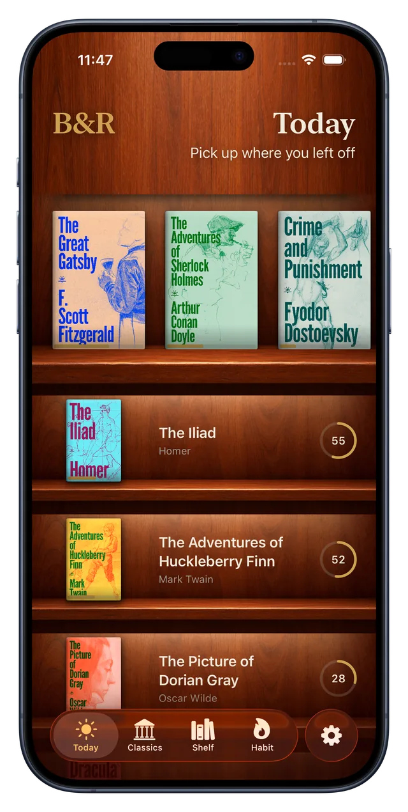
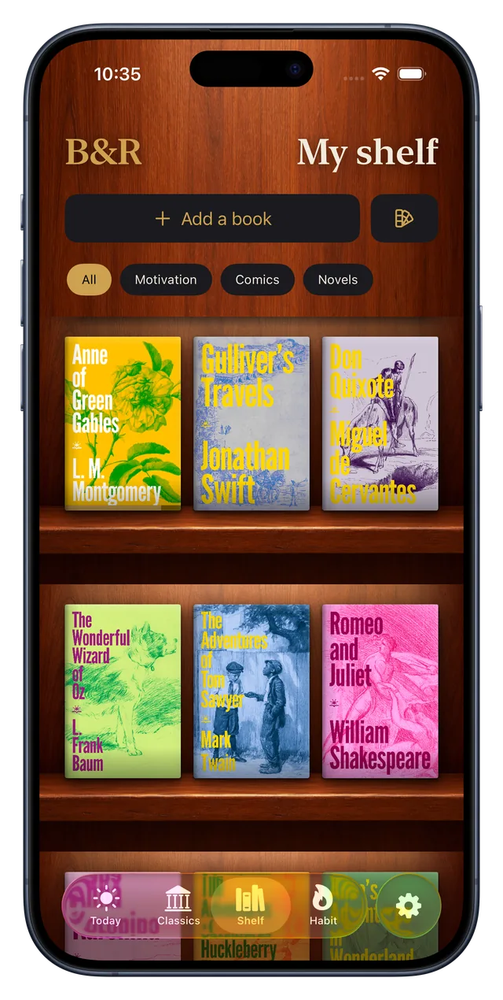
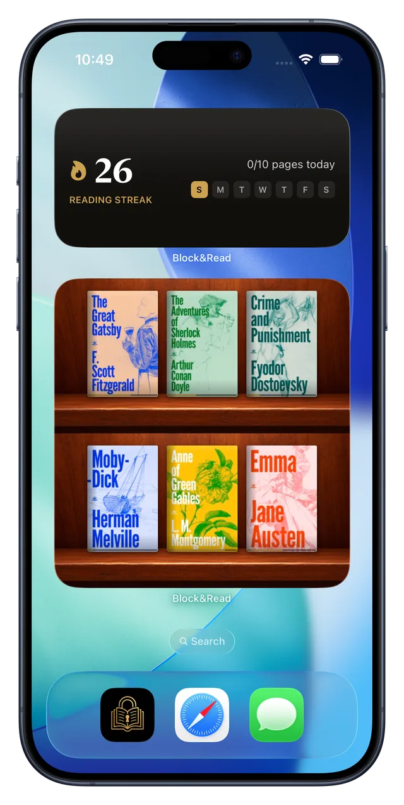
How it worksCómo funciona
Three steps. Zero willpower.Tres pasos. Cero fuerza de voluntad.
The habit you already have — reaching for your phone — becomes the trigger for the one you want.El hábito que ya tienes —agarrar el teléfono— se convierte en el disparador del que quieres.
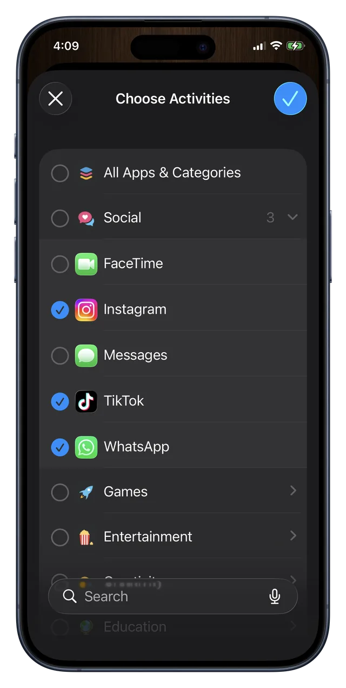
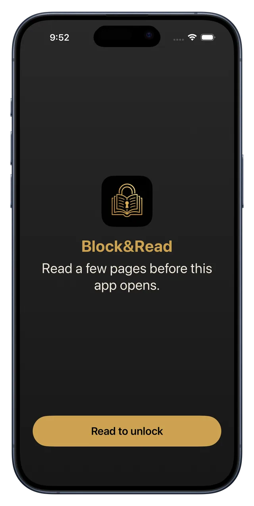
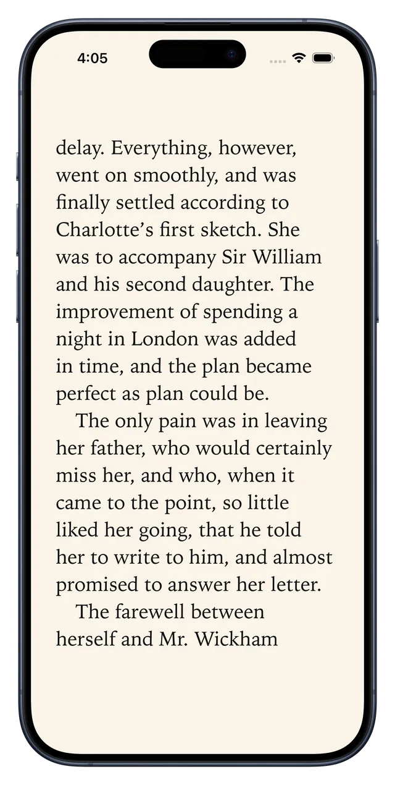
Inside the AppDentro de la app
Block the apps. Read the books.Bloquea las apps. Lee los libros.
A blocker that only works if the reading is worth coming back to. So the reading got a bookcase.Un bloqueador solo funciona si vale la pena volver a leer. Por eso la lectura tiene su propia biblioteca.
Your libraryTu biblioteca
Your books, on a real shelf.Tus libros, en un estante de verdad.
Covers stand on wood, with warm light under every board. Pick walnut, oak, ebony or cherry, and sort your books into shelves of your own.Las tapas se paran sobre la madera, con luz cálida bajo cada tabla. Elige nogal, roble, ébano o cerezo, y ordena tus libros en estantes propios.
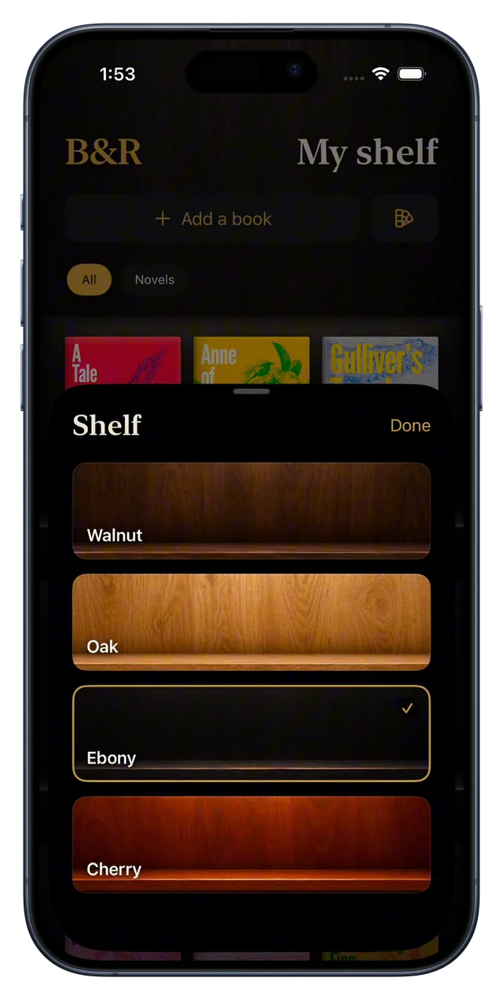
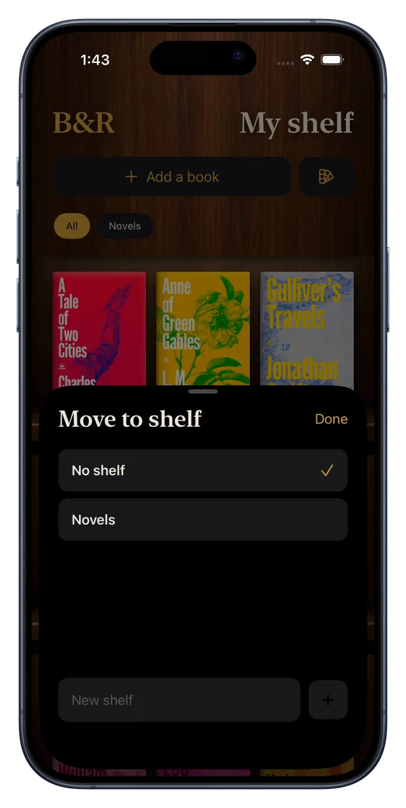
The readerEl lector
Read it. Mark it. Keep it.Léelo. Márcalo. Guárdalo.
Highlight a line in one of eight colors — or any color you like — and write a note on it. Bookmark a page and come back to it, even after you change the text size. Light, sepia or dark; paged or scroll.Subraya una frase en uno de ocho colores —o el que quieras— y escríbele una nota. Marca una página y vuelve a ella, aunque cambies el tamaño de letra. Claro, sepia u oscuro; por páginas o con scroll.
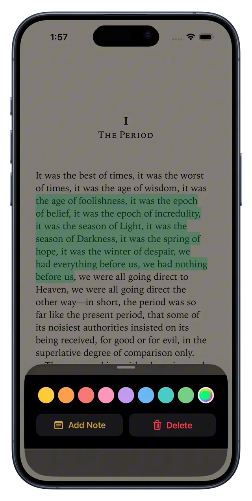
Your books, and oursTus libros, y los nuestros
Classics built in. Your own books too.Clásicos incluidos. Y tus libros también.
81 public-domain classics in English and Spanish, ready to read. Bring your own — your first one is free — and search 75,000+ more with Premium. One reading menu for every format, showing only what each one can do.81 clásicos de dominio público en inglés y español, listos para leer. Trae los tuyos —el primero es gratis— y busca entre 75.000+ más con Premium. Un solo menú de lectura para todos los formatos, que muestra solo lo que cada uno puede hacer.
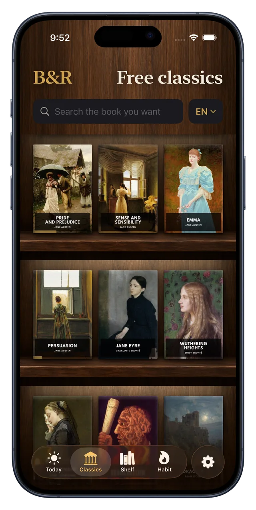
The habitEl hábito
A streak you won't want to break.Una racha que no vas a querer romper.
Every day you read fills a square, and the streak grows. The daily reminder rings like an alarm, even on silent — and your latest covers wait on your Home Screen, one tap from the page.Cada día que lees llena un casillero, y la racha crece. El recordatorio diario suena como una alarma, aunque esté en silencio, y tus últimas tapas esperan en la pantalla de inicio, a un toque de la página.
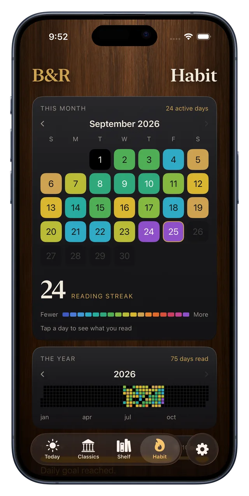
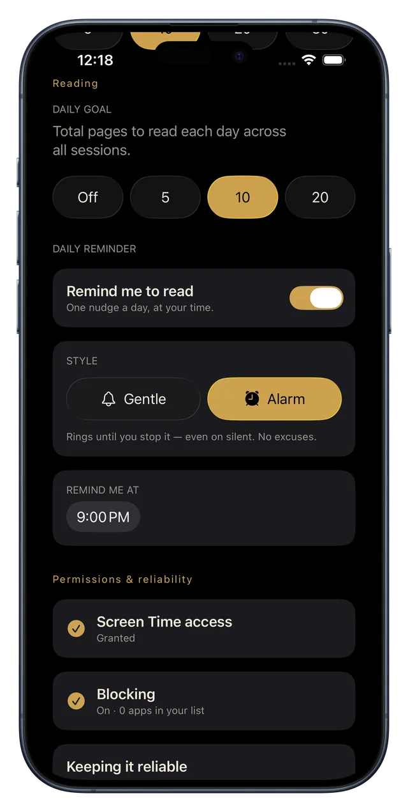
iPad
A bigger shelf.Un estante más grande.
On iPad the shelves widen, Today fits twice the books, and the extra-large widget holds twelve covers.En iPad los estantes se ensanchan, Today muestra el doble de libros y el widget más grande guarda doce tapas.
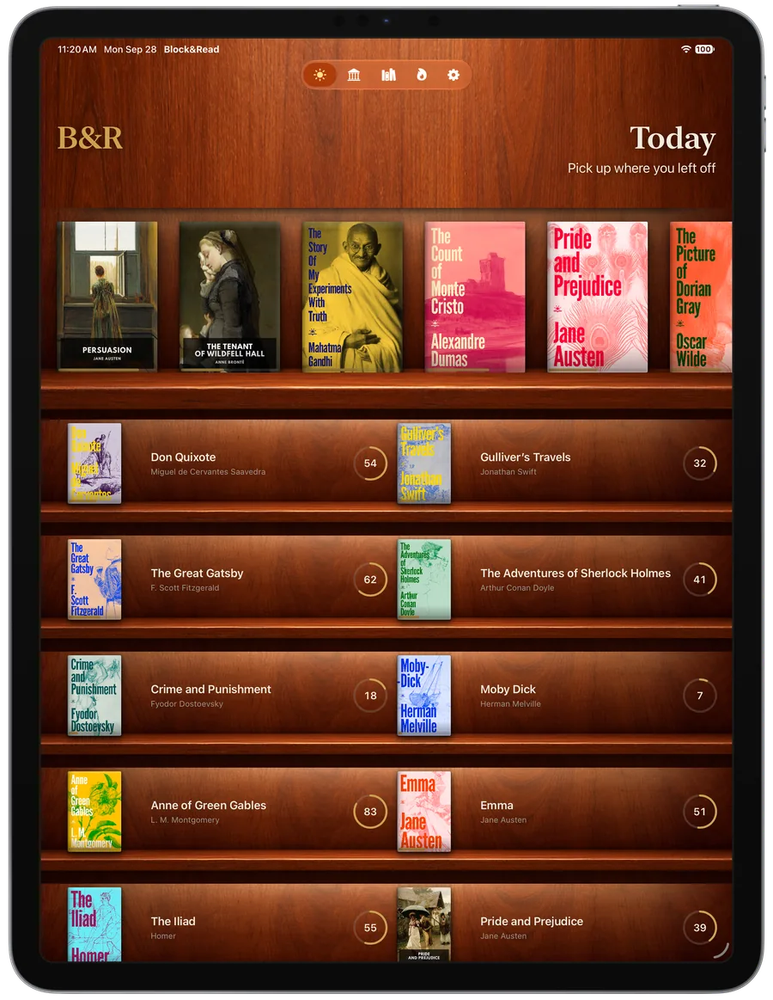
PricingPrecios
Free to start. Yours to keep.Gratis para empezar. Tuyo para siempre.
Most people only need to block one app. That part is free, and it stays free.A la mayoría le alcanza con bloquear una app. Eso es gratis, y lo sigue siendo.
FreeGratis
Everything you need to start.Todo lo que necesitas para empezar.
- Block one app, foreverBloquea una app, para siempre
- One book of your ownUn libro propio
- 81 classics in English and Spanish81 clásicos en inglés y español
- Bookmarks, highlights and notesMarcadores, subrayados y notas
- Streaks, stats and remindersRachas, estadísticas y recordatorios
- Strict ModeModo Estricto
$0 no account neededsin crear cuenta
Premium
For when one app isn't the whole problem.Para cuando una sola app no es todo el problema.
- Block every appBloquea todas las apps
- Blocks itself on a scheduleSe bloquea sola en horario
- All your own books — EPUB, PDF, comicsTodos tus libros — EPUB, PDF, cómics
- Search 75,000+ classicsBusca entre 75.000+ clásicos
- Private iCloud backupRespaldo privado en iCloud
- The Modern Mono themeEl tema Modern Mono
Prices in US dollars. The App Store shows the price for your country.Precios en dólares estadounidenses. La App Store te muestra el precio de tu país.
GuidesGuías
Win your attention back.Recupera tu atención.
Practical guides on screen time, focus and reading more — and how to put Block&Read to work on each one.Guías prácticas (en inglés) sobre tiempo de pantalla, foco y cómo leer más — y cómo usar Block&Read en cada una.
Why App Blockers Fail (and What Works Instead)
Blocking creates a void, and the void loses to boredom every time. Replacement beats restriction.
Read the guideLeer la guía Screen TimeHow to Reduce Screen Time Without Deleting Your Apps
You don't need to quit your phone. You need to make the good thing easier than the bad thing.
Read the guideLeer la guía ReadingHow to Read More Books With the Time You Already Have
You read for hours every day — just not books. How to redirect the scroll into chapters.
Read the guideLeer la guía DistractionHow to Stop Doomscrolling (Without Throwing Your Phone Away)
The scroll is a slot machine. Here's how to swap the payout for pages.
Read the guideLeer la guía EPUB ReaderA Free EPUB Reader for iPhone That Blocks Your Apps
Import your own books, read distraction-free, and let your library guard your attention.
Read the guideLeer la guía StudyHow to Study Without Your Phone Pulling You Away
Blocking during study sessions, and turning course reading into the key that unlocks your breaks.
Read the guideLeer la guíaFAQ
Questions, answered.Preguntas, respondidas.
What is Block&Read?¿Qué es Block&Read?
How does read-to-unlock work?¿Cómo funciona «leer para desbloquear»?
Which apps can I block?¿Qué apps puedo bloquear?
What is Strict Mode?¿Qué es el Modo Estricto?
Can I read my own books?¿Puedo leer mis propios libros?
Can I highlight and take notes?¿Puedo subrayar y tomar notas?
What books are included for free?¿Qué libros vienen gratis?
Does it work on iPad?¿Funciona en iPad?
Does Block&Read track my data?¿Block&Read rastrea mis datos?
How much does Block&Read cost?¿Cuánto cuesta Block&Read?
Is there a one-time purchase?¿Hay un pago único?
Can Block&Read reduce my screen time?¿Puede reducir mi tiempo de pantalla?
Does it work for studying?¿Sirve para estudiar?
Is Block&Read available in Spanish?¿Está disponible en español?
Earn the scroll.Gánate el scroll.
Your apps aren't going anywhere. Neither are the books. The only question is which one opens first.Tus apps no se van a ninguna parte. Los libros tampoco. La única pregunta es cuál se abre primero.
Download on theDescargar en elApp StoreiPhone and iPad · Free to start · No ads, no accounts, no trackingiPhone y iPad · Gratis para empezar · Sin anuncios, sin cuentas, sin rastreo